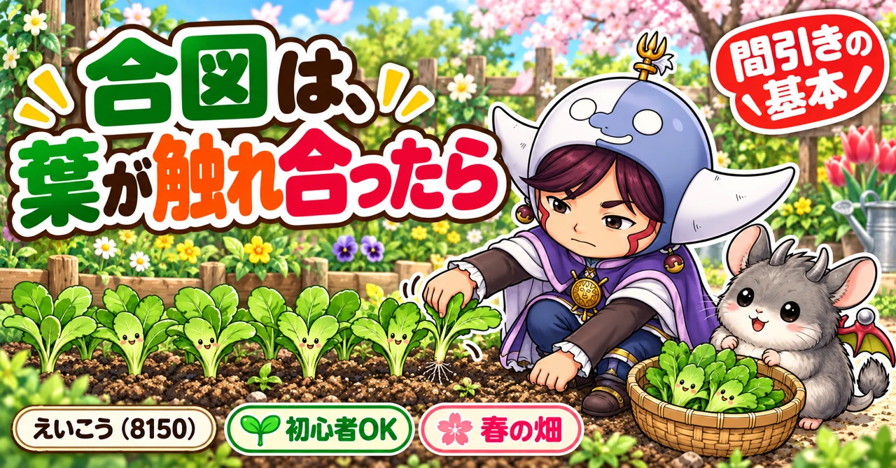
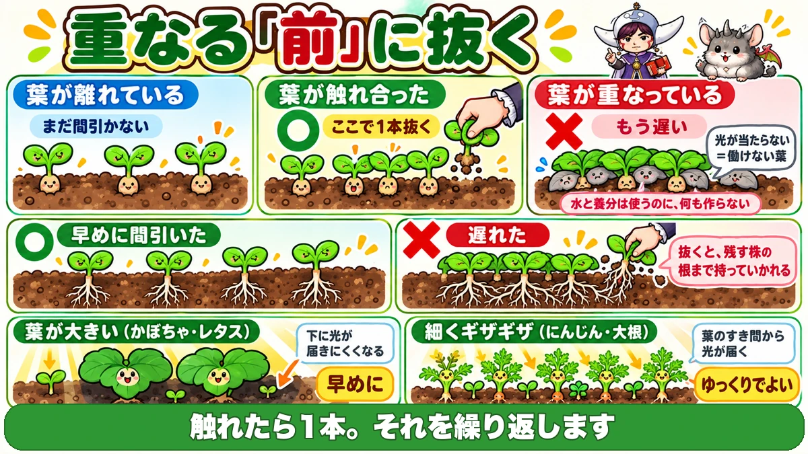
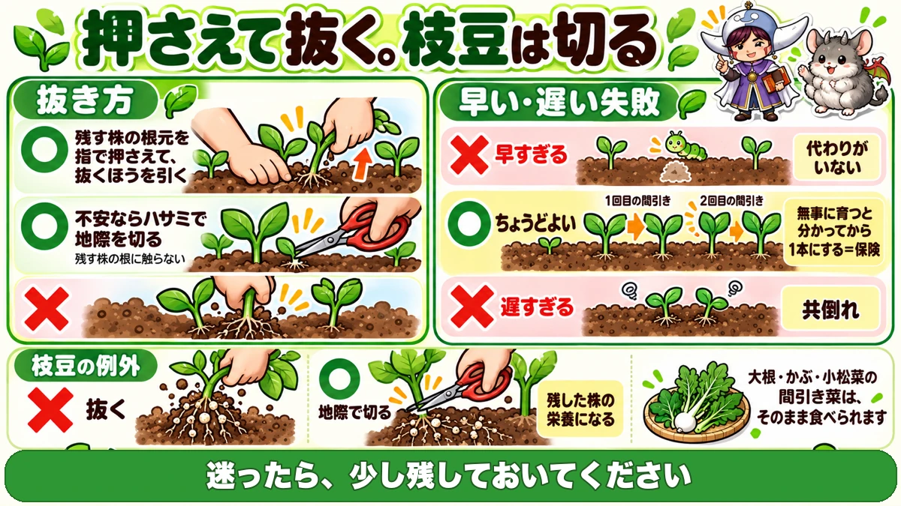
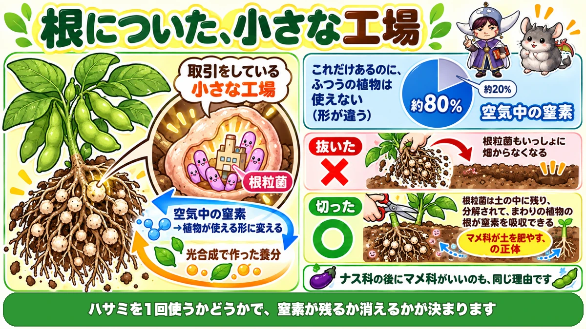

間引きは、葉が触れ合ったら🌱 重なってからでは遅いです

🌱「もったいなくて、なかなか抜けない」
🌱「気づいたら根が絡んで、抜けなくなっていた」
🌱「間引いたのに、残した株も大きくならなかった」
どうも、8150（えいこう）です🌱 家庭菜園歴8年、理科の教員免許を持っていて、有機・無農薬で野菜を育てています。
前回はごぼうでした。今日は間引きの話です。
これまでの記事で「間引いてください」と何度も書いてきました。★今日はその中身をまとめます。
間引きは、家庭菜園でいちばん★心理的にやりにくい作業だと思います。せっかく出た芽を、自分で抜くわけですから。
先に、この記事でいちばん言いたいことを言っておきますね。
★合図は「葉が触れ合ったら」です。
★重なってからでは、もう遅いんです🌱
なぜ、間引くのか
理由は、2つあります
そもそも、なぜ抜くのでしょう。
- ★地上で、光を奪い合うから
- ★地下で、水と肥料を奪い合うから
地上で起きていること
葉が重なると、★下になった葉には光が当たりません。
光が当たらない葉は★光合成ができません。
働かない葉は、赤字です
ここが大事なところです。
★働けない葉も、水と養分は使います。
つまり★何も作らないのに、消費だけする葉になります。
★株全体としては、赤字なんですね。
地下で起きていること
土の中も同じです。
★根が絡み合って、同じ場所の水と肥料を取り合います。
しかも★絡んでしまうと、あとで抜こうとしたときに、残したい株の根まで一緒に持っていかれます。
★合図は、葉が触れ合ったら

重なる「前」です
タイミングの覚え方は、たったひとつです。
★葉と葉が触れ合うくらいになったら、1本抜く。
★重なってからではありません。触れた時点です。
繰り返します
一度で終わりではありません。
- ★葉が触れ合う → 1本抜く
- ★また育って、触れ合う → また1本抜く
- ★最終的に、その野菜の本数まで減らす
★少しずつ減らしていくのが基本です。
★葉の形で、急ぎ方が変わります
これは知っておくと便利です。
- ★葉が大きい野菜（かぼちゃ・レタスなど） … すぐ下が日陰になる。早めに
- ★葉が細くギザギザの野菜（にんじん・大根） … 下まで光が届く。ゆっくりでよい
★にんじんの間引きが「まだ大丈夫」と言われるのは、この葉の形のおかげです。
具体的な回数の例
野菜ごとの目安です。
- ★とうもろこし … 本葉4〜5枚で2本に。そのあと1本に（2回に分ける）
- ★枝豆 … 本葉3枚くらいで2本に
★やってはいけない、2つ
❶ 遅すぎる
これがいちばん多い失敗です。
「もう少し大きくしてから」と思っているうちに、★どちらの株も育たなくなります。
光も肥料も分け合ったまま、★共倒れです。
★根も絡みます。抜こうとして、残す株を傷めます。
❷ 早すぎる
意外に思われるかもしれませんが、★早すぎるのも失敗です。
まだ弱々しい段階で1本きりにすると、どうなるか。
★その1本が病気になったら、そこは終わりです。
虫に食われても、★代わりがいません。
つまり、保険です
しばらく余分に残しておくのは、★保険です。
★「無事に育つと分かってから、1本にする」
だから★2回に分けて間引くわけですね。
どちらが怖いか
正直に書くと、★早すぎるほうが取り返しがつきません。
★遅すぎた場合は、小さくても穫れます。
★早すぎて全滅した場合は、ゼロです。
★迷ったら、少し残しておいてください。
抜き方と、枝豆だけの例外

基本は、押さえて抜く
普通の抜き方はこうです。
★残す株の根元を、指で押さえる。
そのうえで、★抜くほうを引っぱります。押さえていないと、一緒に浮きます。
不安なら、切る
「隣まで動いてしまいそう」というときは、無理をしないでください。
★ハサミで、地際を切る。
これなら★残す株の根には、まったく触りません。
★初めての方には、こちらをおすすめします。
★枝豆だけは、必ず切ってください
ここが今日いちばんお得な話です。
★枝豆（マメ科）は、抜かずに切ってください。
理由は記事の最後の理科パートで説明しますが、先に結論を書きます。
★切ると、残した株の栄養になります。
★抜くと、それが持ち去られます。
間引き菜は、食べられます
抜いたものは、捨てないでください。
★大根・かぶ・小松菜の間引き菜は、そのまま食べられます。
★やわらかくて、味も濃いです。みそ汁に入れるだけで十分です。
★「もったいない」の答えは、食べることです。
★葉物だけは、逆になります
弱い株を抜く、ではありません
ここまで「弱い株を抜いて、いい株を残す」と書いてきました。
★レタスや小松菜のような葉物では、これが逆になります。
大きい株から、食べます
やり方はこうです。
★大きく育って食べごろになった株から、穫る。
★小さい株は、残す。
なぜ逆なのか
理由は単純です。
★葉物は、葉そのものが収穫物だからです。
大きくなった株を抜けば★それがその日の収穫になり、同時に★残った株の場所が空きます。
★次に来たときには、小さかった株が大きくなっています。
家庭菜園に、合っています
私はこれを知ってから、葉物の作り方が変わりました。
★一度に全部は食べきれませんよね。
★食べる分だけ、大きいものから穫っていく。
★収穫と間引きが、同じ作業になります。
学ぶ：枝豆の根には、工場があります🔬

根を、見てください
枝豆を1株、抜いて根を見てみてください。
★白いつぶつぶが、たくさんついています。
これを★根粒（こんりゅう）といいます。
中に、菌が住んでいます
このつぶの中には、★根粒菌という細菌が住んでいます。
そして、この菌はすごいことをしています。
★空気中の窒素を取り込んで、植物が使える形に変えているんです。
空気の8割は、窒素です
ここが面白いところです。
★空気のおよそ8割は、窒素です。
肥料の三大要素の筆頭も窒素です。★それだけ豊富にあるのに、普通の植物は空気中の窒素を使えません。
★形が違うからです。
菌が、変換しています
そこで根粒菌の出番です。
★菌が空気中の窒素を取り込み、植物が吸える形に変える。
★お返しに、植物は光合成で作った養分を菌に渡す。
★根粒は、この取引をしている小さな工場なんですね。
だから、抜かずに切ります
さて、話が戻ります。
間引きで枝豆を抜くと、どうなるか。
★根粒ごと、畑から持ち去ることになります。
でも★地際で切れば、根と根粒は土の中に残ります。
★やがて分解されて、その窒素は残した株が使えます。
マメ科が土を肥やす、というのはこれです
「マメ科を植えると土が肥える」と聞いたことがあると思います。
★正体はこれです。
連作障害の記事で★「ナス科の後にはマメ科がいい」と書いたのも、同じ理由でした。
★ハサミを1回使うかどうかで、その窒素が残るか消えるかが決まる。知っていると、少し得をします☺️
まとめ
ここまで読んでくださって、ありがとうございます！
- ★間引く理由は、光の奪い合いと、水・肥料の奪い合い
- ★日陰になった葉は、消費するだけの赤字になる
- ★合図は「葉が触れ合ったら」
- ★重なってからでは遅い
- ★触れたら1本、を繰り返す
- ★葉が大きい野菜は早めに、細くギザギザの葉はゆっくりでよい
- ★とうもろこしは本葉4〜5枚で2本、その後1本
- ★枝豆は本葉3枚くらいで2本
- ★遅すぎると共倒れになり、根も絡む
- ★早すぎると、やられたときに代わりがいない
- ★余分に残しておくのは保険
- ★迷ったら少し残す
- ★残す株の根元を押さえて抜く
- ★不安ならハサミで地際を切る
- ★枝豆は必ず切る（根粒を土に残す）
- ★間引き菜は食べられる
- ★葉物は逆。大きい株から穫って、小さい株を残す
- ★根粒菌は空気中の窒素を植物が使える形に変えている
全部やろうとしなくて大丈夫です。まずは★次に畑に行ったとき、葉が触れ合っている場所を探してみてください。だいたい、もう手遅れの一歩手前です🌱
次回は、メロンの話です。★あの網目が、実は「ひび割れの跡」だという話をします🍈
小さめのハサミ
枝豆やとうもろこしは、抜くと隣の根まで動きます。地際で切れば、残す株に触らずに済みます。刃先が細いものだと、混み合った中でも狙った株だけ切れます。
![[商品価格に関しましては、リンクが作成された時点と現時点で情報が変更されている場合がございます。]](https://hbb.afl.rakuten.co.jp/hgb/56d22030.def85fa7.56d22031.b89fde86/?me_id=1250472&item_id=10022339&pc=https%3A%2F%2Fthumbnail.image.rakuten.co.jp%2F%400_mall%2Fplantz%2Fcabinet%2F01%2Ft-13.jpg%3F_ex%3D240x240&s=240x240&t=picttext "[商品価格に関しましては、リンクが作成された時点と現時点で情報が変更されている場合がございます。]")

小かぶのタネ
間引きの練習にいちばん向いています。9月にまけば1か月ちょっとで穫れて、間引き菜もそのまま食べられます。
![[商品価格に関しましては、リンクが作成された時点と現時点で情報が変更されている場合がございます。]](https://hbb.afl.rakuten.co.jp/hgb/56e76943.db126f41.56e76944.bd847f20/?me_id=1270580&item_id=10012182&pc=https%3A%2F%2Fthumbnail.image.rakuten.co.jp%2F%400_mall%2Ftekutekushop%2Fcabinet%2Fseed%2Fhn130050.jpg%3F_ex%3D240x240&s=240x240&t=picttext "[商品価格に関しましては、リンクが作成された時点と現時点で情報が変更されている場合がございます。]")
小松菜のタネ
こちらも間引きながら穫れる野菜です。葉物は大きい株から先に穫るので、記事の後半の話がそのまま試せます。
![[商品価格に関しましては、リンクが作成された時点と現時点で情報が変更されている場合がございます。]](https://hbb.afl.rakuten.co.jp/hgb/56e76943.db126f41.56e76944.bd847f20/?me_id=1270580&item_id=10012154&pc=https%3A%2F%2Fthumbnail.image.rakuten.co.jp%2F%400_mall%2Ftekutekushop%2Fcabinet%2Fseed%2Fhn063.jpg%3F_ex%3D240x240&s=240x240&t=picttext "[商品価格に関しましては、リンクが作成された時点と現時点で情報が変更されている場合がございます。]")